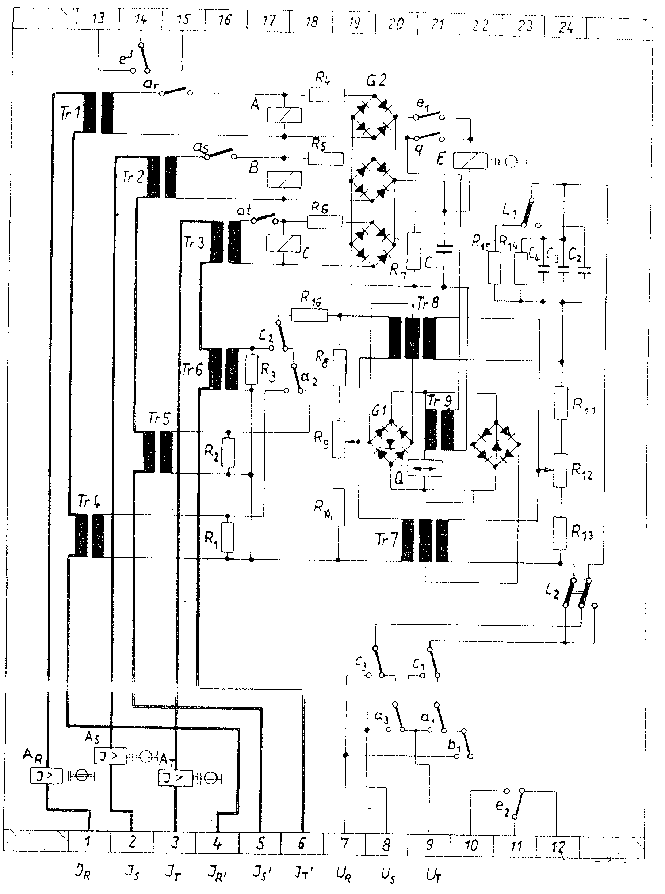

| Protection |
DIRECTIONAL OVER CURRENT
RSRW5
Hiem Electric
Issued to: Talkha PC Lab
Using voltage and current injection equipment including phase shifter
Date Approved: 29 Dec 1997
Date to be Reviewed: Dec 2002
|
|
|
|||
| Equipment: DIRECTIONAL OVER CURRENT RSRW5 Hiem Electric |
Document No.: DsR-046-r0 | |||
|
Issued to: Talkha PC Lab |
||||
| Status: APPROVED | ||||
| Procedure: Using voltage and current injection equipment including phase shifter |
Date Approved: 29 Dec 1997 |
|||
|
Date to be Reviewed: Dec 2002 |
||||
Introduction
The RSRW5 relay is an electro-mechanical directional over-current manufactured by (EAW) This procedure details the steps required to completely check the proper operation and calibration of the RSRW5 relay. It is recommended this procedure be carried out on a yearly bases. This work be carried out section of this document is divided into 3 sections.
The first preliminary steps to prepare for relay testing describes the activities required prior to testing. Some of these steps could be performed days before the actual test. The second section Preparation for testing describes the steps to set up the equipment for performing the actual tests. The third section is the actual test.
The document is formatted the way to minimize the possibility of error causing personal injury or damage to equipment.
The first draft initialed and tested by eng. ELSaeed Mohamed at Talkha PC Lab, approved by general director of Quality eng. Mohamed Foaad .
Safety Precautions
A work permit must be issued and the qualified maintenance staff should carry the suitable safety category
Safety fence with caution marks surrounding the work area is required.
Line isolation is required.
Make sure CT secondary circuits are shorted and VT secondary circuits are open.
Tools and Equipment
Voltage and current secondary injection equipment including Phase Shifter.
Voltmeter, Ammeter.
Test leads.
Work to be Carried Out
Preparation
Carefully follow these test procedure steps
Make sure CT secondary circuits are shorted at the incoming terminal blocks before isolating the relay current circuits for test.
Look at field maintenance file and compare the position of the setting switches on relay with those shown on the setting sheet.
Set the earthing link on the relay to line side position.
Over-current Test
Label the wires before removing from terminals block of the relay.
Remove the input current terminals number 1, 2, and 3 from the relay.
Remove the voltage terminals number 7, 8, and 9 from the relay.
Connect test leads between the current terminals number 1 and 4 on the relay to the current terminals on the phase shifter.
Slowly increase the current until the red indication on over-current element phase R on the relay appears. The relay must operate with a current between ± 10% of t setting value.
Record this value on the test sheet.
Increase the injected current with a value 25% larger than the operating value.
Slowly decrease the current until the relay resets.
Record this value on the test sheet.
Switch off the test set.
Repeat the above test from step 1 to 11 but inject current between terminals 2 and 5 for phase S and terminals 3 and 6 for phase T on the relay.
Directional Test
Set the angle on the relay to 30 degrees.
Connect leads between the current terminals number 1 and 4 on the relay to the current terminals on the test set.
Connect test leads between the voltage terminals number 7,8, and 9 on the voltage terminals R, S and T respectively on the test set.
Switch on the test set.
Inject three phase 100 ac volt from the test set.
Use phase rotation indicator to be sure phase rotation R, S, and T on the relay.
Inject current into the relay until it operates.
Adjust the phase shift angle between the injected current and voltage to a value equal 30 degrees.
Observe the output element (E) on the relay at this moment, it must be picking up.
Increase the angle on the test set until the relay out-put element (E) resets.
Record this angle value on the test sheet, at this moment, the angle should be approximately 120 degrees.
Continue to increase the angle until the relay picks up again Record this angle value on the test sheet. At this moment, the angle should be approximately 300 degrees.
Repeat the above test from step 1 to step 12 for phase S and T.
Repeat the above test from step 1 to step 13 but change the angle on the relay to 60 degree according to that adjust the angle on the test set to 60 degrees
Trip Test
Request the operator to switch on the main circuit breaker.
Operate the output auxiliary contact (E) by hand to trip the circuit breaker.
Check that the circuit breaker tripped.
Request Power Line be returned to Service
Verify the test results match the relay setting - If not consult technical services.
Test trip the circuit breaker associated with the relay.
Test Sheet
|
I pick up |
I reset |
Reset factor |
|
|
R |
|||
|
S |
|||
|
T |
|
Relay close the contact |
Relay open contact |
|
|
Adjustment angle 30 |
||
|
Adjustment angle 60 |


Location:
Equipment code:
Checked by:
Date:
Signature: